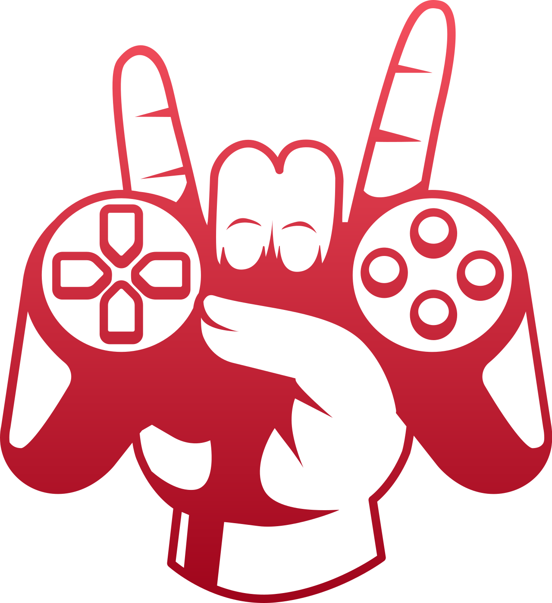

ZOF Esports is an esports-themed website and organization created by three Bachelor of Science in Information Technology
(BSIT) students from Emilio Aguinaldo College. The platform was developed to build a competitive gaming community that connects
passionate and skilled players from around the world.
The main purpose of ZOF Esports is to recruit talented esports players who can represent the team in different esports
tournaments and international competitions. The website also serves as a platform for player recruitment, team communication,
esports updates, and community engagement. Through teamwork, dedication, and passion for gaming, ZOF Esports aims to compete on
the world stage and become recognized in the global esports industry.
The ZOF Esports community is open to everyone who wants to support, grow, and become part of our journey in the esports
industry. Our community welcomes gamers, supporters, streamers, content creators, and esports enthusiasts who share the same
passion for competitive gaming and teamwork.
By joining the ZOF Esports community, members can support our team through content creation, live streaming, sharing esports
updates, promoting our organization, and encouraging our players during tournaments and events. The community also serves as a
place where members can interact, collaborate, and help strengthen the ZOF Esports brand as we aim to compete on the
international stage.
Together, the ZOF Esports community and team work as one to achieve success, inspire other gamers, and represent our organization
with pride and dedication.
The objective of ZOF Esports is to create an online platform that recruits talented esports players globally and provides them with opportunities to participate in competitive gaming events. The website also aims to strengthen communication between players, organize esports activities, and promote the growth of esports within the gaming community.
The main goal of ZOF Esports is to recruit skilled players from different countries who can represent the ZOF Esports team in international esports competitions and tournaments. The team aspires to compete on the world stage and become recognized in the global esports industry through dedication, teamwork, and excellence in gaming.